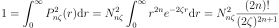
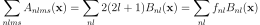

8.11. Hartree-Fock (HF) Method¶
8.11.1. Derivation¶
The interacting Hamiltonian for many body Schrödinger equation is (see the general QFT notes for derivation):

where are spin orbitals (thus the integration over  below)
and:
below)
and:
We would like to minimize the energy using
the following basis for  electrons:
electrons:
We express the energy  in this basis:
in this basis:
We minimize it with the constrain  :
:
We obtain:
(8.11.1.1)¶
in the  -representation:
-representation:
And writing the individual terms explicitly (in this section, all orbitals are spin orbitals):
![\braket{{\bf x} | i} = \psi_i({\bf x})
\braket{{\bf x} | T | i}
= \left(-\half \nabla^2 -\sum_n {Z_n\over | {\bf x} -{\bf R}_n | }
\right)\psi_i({\bf x})
\braket{j{\bf x}|V|ij}
= \int \psi_j^*({\bf y}){1\over|{\bf x}-{\bf y}|}
\psi_i({\bf x})\psi_j({\bf y}) \d^3 y
= \int {|\psi_j({\bf y})|^2\over|{\bf x}-{\bf y}|}
\d^3 y\,\,\psi_i({\bf x})
\braket{j{\bf x}|V|ji}
= \int \psi_j^*({\bf y}){1\over|{\bf x}-{\bf y}|}
\psi_j({\bf x})\psi_i({\bf y}) \d^3 y
= \int {\psi_i({\bf y})\psi_j^*({\bf y})\over|{\bf x}-{\bf y}|}
\d^3 y\,\,\psi_j({\bf x})](../_images/math/06119121badede3ebe95177be09ce2b7fff1aa3a.svg)
we get the Hartree-Fock equations:
(8.11.1.2)¶
Let’s introduce the number density  , Hartree potential and nonlocal exchange potential
, Hartree potential and nonlocal exchange potential  with its kernel :
with its kernel :
then we can write the HF equations as:
The Hartree potential can be calculated by solving the Poisson equation:
where:
The application of the exchange potential on any function can be calculated by:
8.11.2. Roothaan Equations For Closed Shell Systems¶
Starting from (8.11.1.1) and integrating over spins we get (here
,  are spatial orbitals, not spin orbitals):
are spatial orbitals, not spin orbitals):
(8.11.2.1)¶
We introduce basis functions  by (below the greek letters are basis
functions, latin letters are spatial orbitals):
by (below the greek letters are basis
functions, latin letters are spatial orbitals):

substitute into (8.11.2.1) and multiply by  from the left:
from the left:
(8.11.2.2)¶
Now we expand the functions  :
:
(8.11.2.3)¶
we introduce the density matrix:
and get:
(8.11.2.4)¶
introducing:
the equation (8.11.2.4) is:
(8.11.2.5)¶
These are the Roothaan equations. It is a generalized eigenvalue problem.
Total energy is given by (the in the first equation are spin orbitals, in the other equations are spatial orbitals):
![E = \sum_{i} \braket{i|T|i} +
\half \sum_{i,j} \left(\braket{ij|V|ij}-\braket{ij|V|ji}\right) =
= \sum_{i} 2 I(i) + \sum_{i,j} \left(2 J(i, j) - K(i, j)\right) =
= \sum_{i} 2 \braket{i|T|i} +
\sum_{i,j} \left(2\braket{ij|V|ij}- \braket{ij|V|ji}\right) =
= \sum_{i} 2 \braket{i|T|i} +
2\sum_{i,j} \left(\braket{ij|V|ij}-\half \braket{ij|V|ji}\right) =
= \sum_{\mu\nu} \sum_{i} 2 \braket{\mu|T|\nu} C_{\nu i} C_{\mu i}^* +
2\sum_{\mu\nu}\sum_{\alpha\beta}
\sum_{i,j}
C_{\nu i} C_{\mu i}^*
C_{\alpha j} C_{\beta j}^*
\left(\braket{\mu\beta|V|\nu\alpha}-
\half \braket{\mu\beta|V|\alpha\nu}\right) =
= \sum_{\mu\nu} \braket{\mu|T|\nu} P_{\nu\mu} +
\half \sum_{\mu\nu}\sum_{\alpha\beta}
P_{\nu\mu}
P_{\alpha\beta}
\left(\braket{\mu\beta|V|\nu\alpha}-
\half \braket{\mu\beta|V|\alpha\nu}\right) =
= \sum_{\mu\nu} P_{\nu\mu} (H_{\mu\nu}^{\mbox{core}}
+\half G_{\mu\nu}) =
= \sum_{\mu\nu} P_{\nu\mu} (\half H_{\mu\nu}^{\mbox{core}}
+\half (H_{\mu\nu}^{\mbox{core}} + G_{\mu\nu})) =
= \half \sum_{\mu\nu} P_{\nu\mu} (H_{\mu\nu}^{\mbox{core}}
+F_{\mu\nu})](../_images/math/75d70ab435bbfc44988913547ed84d405def4cc2.svg)
The same thing can be derived in -representation
starting from (8.11.1.2) and introducing spatial orbitals:
(8.11.2.6)¶
We introduce basis functions  :
:
substitute into (8.11.2.6) and also multiply the whole equation by
 and integrate over
and integrate over  :
:
(8.11.2.7)¶
This can be written as:
where:
![T_{\mu\nu} =
\int \phi_\mu^*({\bf x}) \left(-\half \nabla^2 \right)
\phi_\nu({\bf x}) \d^3 x
=
\half \int \nabla \phi_\mu^*({\bf x}) \cdot
\nabla \phi_\nu({\bf x}) \d^3 x
V_{\mu\nu} =
\int \phi_\mu^*({\bf x}) \left(-{Z\over |{\bf x}|}\right)
\phi_\nu({\bf x}) \d^3 x
G_{\mu\nu} =
\int \phi_\mu^*({\bf x}) \left(
\int {2\sum_{k=1}^{N/2}|\psi_k({\bf y})|^2\over|{\bf x}-{\bf y}|}
\d^3 y\right)\phi_\nu({\bf x}) \d^3 x
-\int
\phi_\mu^*({\bf x})
\sum_{k=1}^{N/2}\int {\phi_\nu({\bf y})\psi_k^*({\bf y})\over|{\bf x}-{\bf y}|}
\d^3 y\,\,\psi_k({\bf x})\d^3 x
S_{\mu\nu} = \int \phi_\mu^*({\bf x}) \phi_\nu({\bf x})\d^3 x](../_images/math/96beff67e6211b68a257bfc264346bf489991efa.svg)
Introducing the density matrix and density:
![\rho({\bf x}, {\bf y}) = \braket{{\bf x} | \hat \rho | {\bf y}}
= \sum_{\alpha\beta} \braket{{\bf x}|\alpha}P_{\alpha\beta}
\braket{\beta|{\bf y}}
= \sum_{\alpha\beta} \phi_\alpha({\bf x}) P_{\alpha\beta}
\phi_\beta^*({\bf y})
P_{\alpha\beta} = 2 \sum_{k=1}^{N/2} C_{\alpha k} C_{\beta k}^*
\rho({\bf x}) = 2 \sum_{k=1}^{N/2} | \psi_k({\bf x})|^2
= 2 \sum_{k=1}^{N/2} | \braket{{\bf x}|k}|^2
= 2 \sum_{k=1}^{N/2} \braket{{\bf x}|k}\braket{k|{\bf x}}
= \braket{{\bf x}|\hat \rho|{\bf x}}
= \sum_{\alpha\beta} \phi_\alpha({\bf x}) P_{\alpha\beta}
\phi_\beta^*({\bf x})](../_images/math/145d15b35d08d340f2619d54ca974b1ff28209b4.svg)
Expanding the  functions and using the density matrix we get for
:
functions and using the density matrix we get for
:
or

In physical and chemistry notation this is written as:
Note that this notation implicitly assumes the  factor, so
for example actually means
factor, so
for example actually means
 and one has to understand this
from the context.
and one has to understand this
from the context.
8.11.3. Two Particle Matrix Element¶
The two particle matrix element is:
(8.11.3.1)¶
The  is called the physicists’ notation because
the
is called the physicists’ notation because
the  and
and  kets are:
kets are:
The  is called the chemists’ notation. From (8.11.3.1) there
are two types of symmetries — interchanging of the dummy variables:
is called the chemists’ notation. From (8.11.3.1) there
are two types of symmetries — interchanging of the dummy variables:
and taking complex conjugate:
If the matrix elements are real, then:
In general those are the only symmetries (4 total).
If however,
the functions are real, then there are additional symmetries:
an exchange  and .
The symmetries of are exchange of with or with
and .
The symmetries of are exchange of with or with  or the
or the
 and
and  pairs (8 total):
pairs (8 total):
So if we view as two boxes then we can permute the
labels in the given box “ ”, as well as exchange the boxes (the only
thing we cannot do is to take one particle from one box and put it into the
other). As such the box “” is a pair of two electrons (in any order) and
the two electron integral assigns a unique number to a pair of such boxes (in
any order). The symmetries of the symbol are:
”, as well as exchange the boxes (the only
thing we cannot do is to take one particle from one box and put it into the
other). As such the box “” is a pair of two electrons (in any order) and
the two electron integral assigns a unique number to a pair of such boxes (in
any order). The symmetries of the symbol are:
Example I: the Slater integral has all 8 symmetries (Slater integral uses physical notation).
Example II: In spherical symmetry, the 2-particle integrals can be written as (see below for derivation):
![\braket{\alpha \beta | \gamma \delta}
=
\braket{n_\alpha l_\alpha m_\alpha \ n_\beta l_\beta m_\beta |
n_\gamma l_\gamma m_\gamma \ n_\delta l_\delta m_\delta}
= (n_\alpha l_\alpha m_\alpha \ n_\gamma l_\gamma m_\gamma |
n_\beta l_\beta m_\beta \ n_\delta l_\delta m_\delta) =
=
\sum_{k=\max(| l_\alpha-l_\gamma| ,| l_\beta-l_\delta| , | m_\alpha-m_\gamma| )}^{
\min(l_\alpha+l_\gamma, l_\beta+l_\delta)
}\!\!\!\!\!\!\!\!\!\!\!\!
c^k(l_\alpha, m_\alpha, l_\gamma, m_\gamma)
c^k(l_\delta, m_\delta, l_\beta, m_\beta)
\delta_{m_\alpha+m_\beta- m_\gamma-m_\delta, 0}
R^k(n_\alpha l_\alpha, n_\beta l_\beta, n_\gamma l_\gamma,
n_\delta l_\delta)](../_images/math/0d6cb3f0d4105318d8b7145447a3a32b93f85266.svg)
They only have 4 symmetries, because spherical harmonics are complex. In particular:
![\braket{\beta \alpha | \delta \gamma}
=
\sum_{k=\max(| l_\beta-l_\delta| ,| l_\alpha-l_\gamma| , | m_\beta-m_\delta| )}^{
\min(l_\beta+l_\delta, l_\alpha+l_\gamma)
}\!\!\!\!\!\!\!\!\!\!\!\!
c^k(l_\beta, m_\beta, l_\delta, m_\delta)
c^k(l_\gamma, m_\gamma, l_\alpha, m_\alpha)
\delta_{m_\beta+m_\alpha- m_\delta-m_\gamma, 0}
R^k(n_\beta l_\beta, n_\alpha l_\alpha, n_\delta l_\delta,
n_\gamma l_\gamma) =
= \sum_{k=\max(| l_\beta-l_\delta|, | l_\alpha-l_\gamma|,
| m_\beta-m_\delta| )}^{\min(l_\beta+l_\delta, l_\alpha+l_\gamma)
}\!\!\!\!\!\!\!\!\!\!\!\!
c^k(l_\alpha, m_\alpha, l_\gamma, m_\gamma)
c^k(l_\delta, m_\delta, l_\beta, m_\beta)
(-1)^{m_\alpha-m_\gamma + m_\beta-m_\delta}
\delta_{m_\beta+m_\alpha- m_\delta-m_\gamma, 0}
R^k(n_\alpha l_\alpha, n_\beta l_\beta, n_\gamma l_\gamma,
n_\delta l_\delta) = \braket{\alpha \beta | \gamma \delta}](../_images/math/9765f0c510221243d93f42f16fc1a138b77d943f.svg)
and
![\braket{\gamma \delta | \alpha \beta}
=
\braket{n_\gamma l_\gamma m_\gamma \ n_\delta l_\delta m_\delta |
n_\alpha l_\alpha m_\alpha \ n_\beta l_\beta m_\beta}
= (n_\gamma l_\gamma m_\gamma \ n_\alpha l_\alpha m_\alpha |
n_\delta l_\delta m_\delta \ n_\beta l_\beta m_\beta) =
=
\sum_{k=\max(| l_\gamma-l_\alpha| ,| l_\delta-l_\beta| , |
m_\gamma-m_\alpha| )}^{
\min(l_\gamma+l_\alpha, l_\delta+l_\beta)
}\!\!\!\!\!\!\!\!\!\!\!\!
c^k(l_\gamma, m_\gamma, l_\alpha, m_\alpha)
c^k(l_\beta, m_\beta, l_\delta, m_\delta)
\delta_{m_\gamma+m_\delta- m_\alpha-m_\beta, 0}
R^k(n_\gamma l_\gamma, n_\delta l_\delta, n_\alpha l_\alpha,
n_\beta l_\beta)
=
\braket{\alpha \beta | \gamma \delta}](../_images/math/64cc676880bab41bf07b2b29026c600516fe8515.svg)
We used the symmetries of the Slater integrals as well as the
coefficients that change a sign, but thanks to the , the overall sign does not change. The other two
symmetries are missing, i.e.
and
 .
.
8.11.4. General Matrix Elements in Spherical Symmetry¶
Spherical symmetry is this particular choice of a basis:

It can be shown that the solutions are of the form:
We can now write:
![\psi_i({\bf x}) = \sum_\nu C_{\nu i} \phi_\nu({\bf x})
\int \phi_\mu({\bf x})\psi_i({\bf x}) \d^3 x
= \sum_\nu S_{\mu\nu} C_{\nu i}
\sum_{\mu} S_{\mu\nu}^{-1} \int \phi_\mu({\bf x})\psi_i({\bf x}) \d^3 x
= C_{\nu i}
\sum_{\mu}
\delta_{l_\mu l_\nu} \delta_{m_\mu m_\nu}
\left(S_{n_\mu n_\nu}^{l_\mu}\right)^{-1}
\int \phi_{n_\mu l_\mu m_\mu}({\bf x})
\psi_{nlm}({\bf x}) \d^3 x
= C_{n_\nu l_\nu m_\nu; n l m}
\sum_{\mu}
\delta_{l_\mu l_\nu} \delta_{m_\mu m_\nu}
\left(S_{n_\mu n_\nu}^{l_\mu}\right)^{-1}
\int
{\phi_{n_\mu l_\mu}(r)\over r} Y_{l_\mu m_\mu}(\Omega)
{P_{n l}(r)\over r} Y_{l m}(\Omega)
r^2 \d r \d \Omega
= C_{n_\nu l_\nu m_\nu; n l m}
\sum_{\mu}
\delta_{l_\mu l_\nu} \delta_{m_\mu m_\nu}
\left(S_{n_\mu n_\nu}^{l_\mu}\right)^{-1}
\int
\phi_{n_\mu l_\mu}(r)
P_{n l}(r) \d r \delta_{l l_\mu} \delta_{m m_\mu}
= C_{n_\nu l_\nu m_\nu; n l m}
\delta_{l l_\nu} \delta_{m m_\nu}
\sum_{n_\mu}
\left(S_{n_\mu n_\nu}^{l}\right)^{-1}
\int
\phi_{n_\mu l}(r)
P_{n l}(r) \d r
= C_{n_\nu l_\nu m_\nu; n l m}
\delta_{l l_\nu} \delta_{m m_\nu}
C_{n_\nu n}^l
= C_{n_\nu l_\nu m_\nu; n l m}](../_images/math/f74d8371caf729f96c10b7d930f87dd72772b5b4.svg)
where

Also we get:
From which it follows:
The  index runs over all combinations of .
In particular, here is an example of one possible way to index the
basis of 12 radial functions for each :
index runs over all combinations of .
In particular, here is an example of one possible way to index the
basis of 12 radial functions for each :
![\begin{array}{r|rrr}
\mu & n_\mu & l_\mu & m_\mu \\
\hline
1 & 1 & 0 & 0 \\
2 & 2 & 0 & 0 \\
3 & 3 & 0 & 0 \\
\cdots & \cdots & & \\
12 & 12 & 0 & 0 \\
13 & 1 & 1 & -1 \\
14 & 2 & 1 & -1 \\
15 & 3 & 1 & -1 \\
\cdots & \cdots & & \\
24 & 12 & 1 & -1 \\
25 & 1 & 1 & 0 \\
26 & 2 & 1 & 0 \\
27 & 3 & 1 & 0 \\
\cdots & \cdots & & \\
36 & 12 & 1 & 0 \\
37 & 1 & 1 & 1 \\
38 & 2 & 1 & 1 \\
39 & 3 & 1 & 1 \\
\cdots & \cdots & & \\
48 & 12 & 1 & 1 \\
49 & 1 & 2 & -2 \\
50 & 2 & 2 & -2 \\
51 & 3 & 2 & -2 \\
\cdots & \cdots & & \\
\end{array}](../_images/math/acfa35f9c231a5ab4cc1c12737941363ab1d0d08.svg)
So the radial index  always starts from 1 for each .
always starts from 1 for each .
Overlap¶
The overlap matrix element
becomes

where
Potential¶
The potential matrix element

becomes
![V_{\mu\nu} =
V_{n_\mu l_\mu m_\mu n_\nu l_\nu m_\nu} = \int {\phi_{n_\mu l_\mu}(r)
\over r}
Y_{l_\mu m_\mu}^*(\Omega)
\left(-{Z\over r}\right)
{\phi_{n_\nu l_\nu}(r)\over r} Y_{l_\nu m_\nu}(\Omega)
r^2 \d r \d \Omega=
= \delta_{l_\mu l_\nu} \delta_{m_\mu m_\nu} \int_0^\infty
\phi_{n_\mu l_\mu}(r)
\left(-{Z\over r}\right)
\phi_{n_\nu l_\nu}(r) \d r =
= \delta_{l_\mu l_\nu} \delta_{m_\mu m_\nu} \int_0^\infty
\phi_{n_\mu l_\mu}(r)
\left(-{Z\over r}\right)
\phi_{n_\nu l_\mu}(r) \d r =
= \delta_{l_\mu l_\nu} \delta_{m_\mu m_\nu} V^{l_\mu}_{n_\mu n_\nu}](../_images/math/6cdb011f57dac4f74d93afc64ac69354af60a50c.svg)
where
Kinetic¶
The kinetic matrix element
becomes
![T_{\mu\nu} =
T_{n_\mu l_\mu m_\mu n_\nu l_\nu m_\nu}
= \int {\phi_{n_\mu l_\mu}(r)\over r} Y_{l_\mu m_\mu}^*(\Omega)
\left(\left(-\half \nabla^2\right)
{\phi_{n_\nu l_\nu}(r)\over r} Y_{l_\nu m_\nu}(\Omega)
\right) r^2 \d r \d \Omega =
= \int {\phi_{n_\mu l_\mu}(r)\over r} Y_{l_\mu m_\mu}^*(\Omega)
\left(\left(-\half {\partial^2\over\partial r^2}
-{1\over r}{\partial\over\partial r}
+{l_\nu (l_\nu+1)\over 2r^2}\right)
{\phi_{n_\nu l_\nu}(r)\over r} Y_{l_\nu m_\nu}(\Omega) \right)
r^2 \d r \d \Omega =
= \delta_{l_\mu l_\nu} \delta_{m_\mu m_\nu}
\int_0^\infty {\phi_{n_\mu l_\mu}(r)\over r}
\left(\left(-\half {\partial^2\over\partial r^2}
-{1\over r}{\partial\over\partial r}
+{l_\mu (l_\mu+1)\over 2r^2}\right)
{\phi_{n_\nu l_\nu}(r)\over r} \right) r^2 \d r =
= \delta_{l_\mu l_\nu} \delta_{m_\mu m_\nu} T^{l_\mu}_{\mu\nu}](../_images/math/ce14fc1b53c1c5a58a24635ad6d54d61c390e37e.svg)
where
![T^l_{n_\mu n_\nu} =
\int_0^\infty {\phi_{n_\mu l}(r)\over r}
\left(\left(-\half {\partial^2\over\partial r^2}
-{1\over r}{\partial\over\partial r}
+{l (l+1)\over 2r^2}\right)
{\phi_{n_\nu l}(r)\over r} \right) r^2 \d r =
= \int_0^\infty {\phi_{n_\mu l}(r)\over r}
\left(\left(-{1\over 2r} {\partial^2\over\partial r^2}r
+{l (l+1)\over 2 r^2}\right)
{\phi_{n_\nu l}(r)\over r} \right) r^2 \d r =
= \int_0^\infty \phi_{n_\mu l}(r)
\left(-\half {\partial^2\over\partial r^2}
+{l (l+1)\over 2 r^2}\right)
\phi_{n_\nu l}(r) \d r =
= \int_0^\infty \left( -\half \phi_{n_\mu l}(r) \phi_{n_\nu l}''(r)
+\phi_{n_\mu l}(r) {l (l+1)\over 2 r^2} \phi_{n_\nu l}(r)\right)
\d r =
= \int_0^\infty \left( \half \phi_{n_\mu l}'(r) \phi_{n_\nu l}'(r)
+\phi_{n_\mu l}(r) {l (l+1)\over 2 r^2} \phi_{n_\nu l}(r)\right)
\d r](../_images/math/7df69a1dd77eee63638030645afa8977a0da283c.svg)
G Matrix¶
The G matrix is given by:
Now we use:
and
![P_{\alpha\beta} = 2 \sum_{i} C_{\alpha i} C_{\beta i}
P_{n_\alpha l_\alpha m_\alpha; n_\beta l_\beta m_\beta}
= 2 \sum_{i}
C_{n_\alpha l_\alpha m_\alpha; n_i l_i m_i}
C_{n_\beta l_\beta m_\beta; n_i l_i m_i} =
= 2 \sum_{i}
\delta_{l_i l_\alpha} \delta_{m_i m_\alpha}
\delta_{l_i l_\beta} \delta_{m_i m_\beta}
C_{n_\alpha n_i}^{l_i}
C_{n_\beta n_i}^{l_i} =
= 2 \delta_{l_\alpha l_\beta}\delta_{m_\alpha m_\beta}
\sum_{n_i}
C_{n_\alpha n_i}^{l_\alpha}
C_{n_\beta n_i}^{l_\alpha} =
= \delta_{l_\alpha l_\beta}\delta_{m_\alpha m_\beta}
P^{l_\alpha}_{n_\alpha n_\beta}](../_images/math/f28942870e4296880e0b7e0aabe5cceb0a35f7ad.svg)
where

Where the sum over all occupied orbitals can be written as:
Where the sum over is the outer sum, both and depend on .
We get:
The first part is the direct term, the second part the exchange term. Let’s treat the direct term first:
![J_{\mu\nu} = \sum_{n_\alpha l_\alpha m_\alpha n_\beta l_\beta m_\beta}
P_{n_\alpha l_\alpha m_\alpha n_\beta l_\beta m_\beta}
\braket{\mu \beta|\nu \alpha} =
= \sum_{n_\alpha l_\alpha m_\alpha n_\beta l_\beta m_\beta}
P_{n_\alpha l_\alpha m_\alpha n_\beta l_\beta m_\beta}
\sum_{k=\max(| l_\mu-l_\nu| ,| l_\beta-l_\alpha|,
| m_\mu-m_\nu| )}^{
\min(l_\mu+l_\nu, l_\beta+l_\alpha)
}\!\!\!\!\!\!\!\!\!\!\!\!
c^k(l_\mu, m_\mu, l_\nu, m_\nu)
c^k(l_\alpha, m_\alpha, l_\beta, m_\beta)
\delta_{m_\mu+m_\beta- m_\nu-m_\alpha, 0}
R^k(n_\mu l_\mu, n_\beta l_\beta, n_\nu l_\nu, n_\alpha l_\alpha) =
= \sum_{n_\alpha l_\alpha m_\alpha n_\beta l_\beta m_\beta}
\delta_{l_\alpha l_\beta} \delta_{m_\alpha m_\beta}
P^{l_\alpha}_{n_\alpha n_\beta}
\sum_{k=\max(| l_\mu-l_\nu| ,| l_\beta-l_\alpha|,
| m_\mu-m_\nu| )}^{
\min(l_\mu+l_\nu, l_\beta+l_\alpha)
}\!\!\!\!\!\!\!\!\!\!\!\!
c^k(l_\mu, m_\mu, l_\nu, m_\nu)
c^k(l_\alpha, m_\alpha, l_\beta, m_\beta)
\delta_{m_\mu+m_\beta- m_\nu-m_\alpha, 0}
R^k(n_\mu l_\mu, n_\beta l_\beta, n_\nu l_\nu, n_\alpha l_\alpha) =
= \sum_{n_\alpha n_\beta} \sum_{l m}
P^{l}_{n_\alpha n_\beta}
\sum_{k=\max(| l_\mu-l_\nu| , | m_\mu-m_\nu| )}^{
\min(l_\mu+l_\nu, 2l)
}\!\!\!\!\!\!\!\!\!\!\!\!
c^k(l_\mu, m_\mu, l_\nu, m_\nu)
c^k(l, m, l, m)
\delta_{m_\mu- m_\nu, 0}
R^k(n_\mu l_\mu, n_\beta l, n_\nu l_\nu, n_\alpha l) =
= \delta_{m_\mu m_\nu}
\sum_{n_\alpha n_\beta} \sum_{l}
P^{l}_{n_\alpha n_\beta}
c^0(l_\mu, m_\mu, l_\nu, m_\nu)
(2l+1)
R^0(n_\mu l_\mu, n_\beta l, n_\nu l_\nu, n_\alpha l) =
= \delta_{l_\mu l_\nu} \delta_{m_\mu m_\nu}
\sum_{l}
(2l+1)\sum_{n_\alpha n_\beta}
P^{l}_{n_\alpha n_\beta}
R^0(n_\mu l_\mu, n_\beta l, n_\nu l_\mu, n_\alpha l)](../_images/math/a764cc59e5da81ebb400ce306e62632a76ad90cb.svg)
For the exchange term we get:
![K_{\mu\nu} = \half \sum_{n_\alpha l_\alpha m_\alpha n_\beta l_\beta m_\beta}
P_{n_\alpha l_\alpha m_\alpha n_\beta l_\beta m_\beta}
\braket{\mu \beta|\alpha \nu} =
= \half \sum_{n_\alpha l_\alpha m_\alpha n_\beta l_\beta m_\beta}
P_{n_\alpha l_\alpha m_\alpha n_\beta l_\beta m_\beta}
\sum_{k=\max(| l_\mu-l_\alpha| ,| l_\beta-l_\nu|,
| m_\mu-m_\alpha| )}^{
\min(l_\mu+l_\alpha, l_\beta+l_\nu)
}\!\!\!\!\!\!\!\!\!\!\!\!
c^k(l_\mu, m_\mu, l_\alpha, m_\alpha)
c^k(l_\nu, m_\nu, l_\beta, m_\beta)
\delta_{m_\mu+m_\beta- m_\alpha-m_\nu, 0}
R^k(n_\mu l_\mu, n_\beta l_\beta, n_\alpha l_\alpha, n_\nu l_\nu) =
= \half \sum_{n_\alpha l_\alpha m_\alpha n_\beta l_\beta m_\beta}
\delta_{l_\alpha l_\beta} \delta_{m_\alpha m_\beta}
P^{l_\alpha}_{n_\alpha n_\beta}
\sum_{k=\max(| l_\mu-l_\alpha| ,| l_\beta-l_\nu|,
| m_\mu-m_\alpha| )}^{
\min(l_\mu+l_\alpha, l_\beta+l_\nu)
}\!\!\!\!\!\!\!\!\!\!\!\!
c^k(l_\mu, m_\mu, l_\alpha, m_\alpha)
c^k(l_\nu, m_\nu, l_\beta, m_\beta)
\delta_{m_\mu+m_\beta- m_\alpha-m_\nu, 0}
R^k(n_\mu l_\mu, n_\beta l_\beta, n_\alpha l_\alpha, n_\nu l_\nu) =
= \half \delta_{m_\mu m_\nu}
\sum_{n_\alpha n_\beta} \sum_{l m}
P^l_{n_\alpha n_\beta}
\sum_{k=\max(| l_\mu-l| ,| l-l_\nu|,
| m_\mu-m| )}^{
\min(l_\mu+l, l+l_\nu)
}\!\!\!\!\!\!\!\!\!\!\!\!
c^k(l_\mu, m_\mu, l, m)
c^k(l_\nu, m_\nu, l, m)
R^k(n_\mu l_\mu, n_\beta l, n_\alpha l, n_\nu l_\nu) =
= \half \delta_{m_\mu m_\nu}
\sum_{n_\alpha n_\beta} \sum_{l m}
P^l_{n_\alpha n_\beta}
\sum_{k=\max(| l_\mu-l| ,| l-l_\nu|,
| m_\mu-m| )}^{
\min(l_\mu+l, l+l_\nu)
}\!\!\!\!\!\!\!\!\!\!\!\!
c^k(l_\mu, m_\mu, l, m)
c^k(l_\nu, m_\mu, l, m)
R^k(n_\mu l_\mu, n_\beta l, n_\alpha l, n_\nu l_\nu)](../_images/math/74915a7ed4224747edf0765c6c43c353ee93f2bf.svg)
For  this can be written as:
this can be written as:
![K_{\mu\nu} = \half \delta_{l_\mu l_\nu} \delta_{m_\mu m_\nu}
\sum_{n_\alpha n_\beta} \sum_{l m}
P^l_{n_\alpha n_\beta}
\sum_{k=\max(| l_\mu-l|,
| m_\mu-m| )}^{l_\mu+l}\!\!\!\!\!\!\!\!\!\!\!\!
c^k(l_\mu, m_\mu, l, m)
c^k(l_\mu, m_\mu, l, m)
R^k(n_\mu l_\mu, n_\beta l, n_\alpha l, n_\nu l_\mu) =
= \half \delta_{l_\mu l_\nu} \delta_{m_\mu m_\nu}
\sum_{n_\alpha n_\beta} \sum_{l}
P^l_{n_\alpha n_\beta}
\sum_{k=| l_\mu-l|}^{l_\mu+l}
\sqrt{2l+1 \over 2l_\mu +1}
c^k(l_\mu, 0, l, 0)
R^k(n_\mu l_\mu, n_\beta l, n_\alpha l, n_\nu l_\mu) =
= \delta_{l_\mu l_\nu} \delta_{m_\mu m_\nu}
\sum_{l}
(2l+1)
\sum_{n_\alpha n_\beta}
P^l_{n_\alpha n_\beta}
\sum_{k=| l_\mu-l|}^{l_\mu+l}
\half
\begin{pmatrix} l_\mu & k & l \\ 0 & 0 & 0 \end{pmatrix}^2
R^k(n_\mu l_\mu, n_\beta l, n_\alpha l, n_\nu l_\mu)](../_images/math/7b89a36378ddbf29cbfeb789dcc437422c62c3bf.svg)
All together we get:
where
Note: performing the sum over  and we get:
and we get:
![G^{l}_{n_\mu n_\nu} =
\sum_{l'}
2(2l'+1)\sum_{n'}\sum_{n_\alpha n_\beta}
C^{l'}_{n_\alpha n'}C^{l'}_{n_\beta n'}
\left(
R^0(n_\mu l, n_\beta l', n_\nu l, n_\alpha l')
-
\sum_{k=| l-l'| }^{l+l'}
\half
\begin{pmatrix} l & k & l' \\ 0 & 0 & 0 \end{pmatrix}^2
R^k(n_\mu l, n_\beta l', n_\alpha l', n_\nu l) \right) =
=
\sum_{l'}
2(2l'+1)\sum_{n'}
\left(
R^0(n_\mu l, n' l', n_\nu l, n' l')
-
\sum_{k=| l-l'| }^{l+l'}
\half
\begin{pmatrix} l & k & l' \\ 0 & 0 & 0 \end{pmatrix}^2
R^k(n_\mu l, n' l', n' l', n_\nu l) \right)](../_images/math/fe8ec5df14aa587903627daf20310ffcebc21c64.svg)
Radial Roothaan Equations¶
The Roothaan equations are:
![\sum_\nu (T + V + G)_{\mu\nu} C_{\nu i} = \epsilon_i \sum_\nu S_{\mu\nu}
C_{\nu i}
\sum_\nu (T + V + G)_{n_\mu l_\mu m_\mu n_\nu l_\nu m_\nu}
C_{n_\nu l_\nu m_\nu n_i l_i m_i} = \epsilon_{n_i l_i m_i}
\sum_\nu S_{n_\mu l_\mu m_\mu n_\nu l_\nu m_\nu}
C_{n_\nu l_\nu m_\nu n_i l_i m_i}
\sum_\nu (T + V + G)_{n_\mu l_\mu m_\mu n_\nu l_\nu m_\nu}
\delta_{l_i l_\nu} \delta_{m_i m_\nu}
C_{n_\nu n_i}^{l_i} = \epsilon_{n_i l_i m_i}
\sum_\nu S_{n_\mu l_\mu m_\mu n_\nu l_\nu m_\nu}
\delta_{l_i l_\nu} \delta_{m_i m_\nu}
C_{n_\nu n_i}^{l_i}
\sum_{n_\nu} (T + V + G)_{n_\mu l_\mu m_\mu n_\nu l_i m_i}
C_{n_\nu n_i}^{l_i} = \epsilon_{n_i l_i m_i}
\sum_{n_\nu} S_{n_\mu l_\mu m_\mu n_\nu l_i m_i}
C_{n_\nu n_i}^{l_i}
\delta_{l_\mu l_i} \delta_{m_\mu m_i}
\sum_{n_\nu}
(T + V + G)_{n_\mu n_\nu}^{l_i}
C_{n_\nu n_i}^{l_i} =
\delta_{l_\mu l_i} \delta_{m_\mu m_i}
\epsilon_{n_i l_i m_i}
\sum_{n_\nu}
S_{n_\mu n_\nu}^{l_i}
C_{n_\nu n_i}^{l_i}](../_images/math/0cced22bfc0c3fc5e7de0be711e83940d372fd2c.svg)
The eigenvalues will be degenerate with respect to  and so the radial Roothaan equations are to be solved for each :
and so the radial Roothaan equations are to be solved for each :

The total energy is:
![E = \half \sum_{\mu\nu} P_{\nu\mu} (H_{\mu\nu}^{\mbox{core}}
+F_{\mu\nu}) =
= \sum_{\mu\nu} P_{\nu\mu} (F_{\mu\nu} - \half G_{\mu\nu}) =
= \sum_{\mu\nu}
\delta_{l_\mu l_\nu} \delta_{m_\mu m_\nu} P_{n_\mu n_\nu}^{l_\mu}
\delta_{l_\mu l_\nu} \delta_{m_\mu m_\nu}
(F - \half G)^{l_\mu}_{n_\mu n_\nu} =
= \sum_{l_\mu}\sum_{m_\mu}\sum_{n_\mu n_\nu}
P_{n_\mu n_\nu}^{l_\mu}
(F - \half G)^{l_\mu}_{n_\mu n_\nu} =
= \sum_{l_\mu} \sum_{n_\mu n_\nu}
(2l_\mu+1)
P_{n_\mu n_\nu}^{l_\mu}
(F - \half G)^{l_\mu}_{n_\mu n_\nu} =
= \sum_l \sum_{n_\mu n_\nu}
(2l+1)
P_{n_\mu n_\nu}^l
(F - \half G)^l_{n_\mu n_\nu} =
= \sum_l \sum_{n_\mu n_\nu}
(2l+1)
\sum_n 2 C^l_{n_\mu n} C^l_{n_\nu n}
(F^l_{n_\mu n_\nu} - \half G^l_{n_\mu n_\nu}) =
= \sum_l \sum_{n_\mu n_\nu}
(2l+1)
\sum_n 2 C^l_{n_\mu n} C^l_{n_\nu n}
\left(\epsilon_{n l} S^l_{n_\mu n_\nu} - \half
\sum_{l'}
2(2l'+1)\sum_{n'} \right.
\left.
\left(
R^0(n_\mu l, n' l', n_\nu l, n' l')
-
\sum_{k=| l-l'| }^{l+l'}
\half
\begin{pmatrix} l & k & l' \\ 0 & 0 & 0 \end{pmatrix}^2
R^k(n_\mu l, n' l', n' l', n_\nu l) \right) \right) =
= \sum_l \sum_n 2(2l+1) \left( \epsilon_{n l}
-\sum_{l'} \sum_{n'} (2l'+1)
\left(
R^0(n l, n' l', n l, n' l')
-\half \sum_{k=|l-l'|}^{k=l+l'}
\begin{pmatrix} l & k & l' \\ 0 & 0 & 0 \end{pmatrix}^2
R^k(n l, n' l', n' l', n l) \right)
\right)](../_images/math/818a0c81c32857a0e9be7cee174a0584682ae875.svg)
Two particle¶
We use the following functions for  :
:
And the multipole expansion:
And we get:
![(ij|kl) = \braket{ik|jl} = (1 1' | 2 2') = \braket{1 2 | 1' 2'} =
= \braket{l_1 m_1 l_2 m_2 |
{1\over |{\bf x} - {\bf x}'|} | l_1' m_1' l_2' m_2'} =
=\int {\psi_i^*({\bf x})\psi_j({\bf x})\psi_k^*({\bf x}')\psi_l({\bf x}')
\over |{\bf x} - {\bf x}'|} \d^3 x \d^3 x' =
= \int
{P_{n_1l_1}(r)\over r} Y_{l_1m_1}^*(\Omega)
{P_{n_1'l_1'}(r)\over r} Y_{l_1'm_1'}(\Omega)
{P_{n_2l_2}(r')\over r'} Y_{l_2m_2}^*(\Omega')
{P_{n_2'l_2'}(r')\over r'} Y_{l_2'm_2'}(\Omega')
\sum_{k,q}{r_{<}^k\over r_{>}^{k+1}}
{4\pi\over 2k+1}Y_{kq}(\Omega)Y_{kq}^*(\Omega')
r^2 r'^2 \d r \d r' \d \Omega \d \Omega' =
=
\sum_{k,q}
\int
Y_{l_1m_1}^*(\Omega)
Y_{l_1'm_1'}(\Omega)
Y_{kq}(\Omega)
\d \Omega
\int
Y_{l_2m_2}^*(\Omega')
Y_{l_2'm_2'}(\Omega')
Y_{kq}^*(\Omega')
\d \Omega'
\int {r_{<}^k\over r_{>}^{k+1}}
{4\pi\over 2k+1}
P_{n_1l_1}(r)
P_{n_1'l_1'}(r)
P_{n_2l_2}(r')
P_{n_2'l_2'}(r')
\d r \d r' =
=
\sum_{k,q}
(-1)^{m_1+m_2+q}
\int
Y_{l_1,-m_1}(\Omega)
Y_{l_1'm_1'}(\Omega)
Y_{kq}(\Omega)
\d \Omega
\int
Y_{l_2,-m_2}(\Omega')
Y_{l_2'm_2'}(\Omega')
Y_{k,-q}(\Omega')
\d \Omega'
\int {r_{<}^k\over r_{>}^{k+1}}
{4\pi\over 2k+1}
P_{n_1l_1}(r)
P_{n_1'l_1'}(r)
P_{n_2l_2}(r')
P_{n_2'l_2'}(r')
\d r \d r' =
=
\sum_{k,q}
(-1)^{m_1+m_2+q}
\sqrt{(2l_1+1)(2l_1'+1)(2k+1)\over 4\pi}
\begin{pmatrix} l_1 & l_1' & k \\ 0 & 0 & 0 \end{pmatrix}
\begin{pmatrix} l_1 & l_1' & k \\ -m_1 & m_1' & q
\end{pmatrix}
\sqrt{(2l_2+1)(2l_2'+1)(2k+1)\over 4\pi}
\begin{pmatrix} l_2 & l_2' & k \\ 0 & 0 & 0 \end{pmatrix}
\begin{pmatrix} l_2 & l_2' & k \\ -m_2 & m_2' & -q
\end{pmatrix}
\int {r_{<}^k\over r_{>}^{k+1}}
{4\pi\over 2k+1}
P_{n_1l_1}(r)
P_{n_1'l_1'}(r)
P_{n_2l_2}(r')
P_{n_2'l_2'}(r')
\d r \d r' =
=
\sum_k
\sqrt{(2l_1+1)(2l_1'+1)(2l_2+1)(2l_2'+1)}
\begin{pmatrix} l_1 & l_1' & k \\ 0 & 0 & 0 \end{pmatrix}
\begin{pmatrix} l_2 & l_2' & k \\ 0 & 0 & 0 \end{pmatrix}
\sum_{q=-k}^k (-1)^{m_1+m_2+q}
\begin{pmatrix} l_1 & l_1' & k \\ -m_1 & m_1' & q \end{pmatrix}
\begin{pmatrix} l_2 & l_2' & k \\ -m_2 & m_2' & -q \end{pmatrix}
\int {r_{<}^k\over r_{>}^{k+1}}
P_{n_1l_1}(r)
P_{n_1'l_1'}(r)
P_{n_2l_2}(r')
P_{n_2'l_2'}(r')
\d r \d r' =
=
\sum_{k=\max(| l_1-l_1'| ,| l_2-l_2'| , | m_1-m_1'| )}^{
\min(l_1+l_1', l_2+l_2')
}\!\!\!\!\!\!\!\!\!\!\!\!
\sqrt{(2l_1+1)(2l_1'+1)(2l_2+1)(2l_2'+1)}
(-1)^{m_1+m_2'} \delta_{m_1+m_2- m_1'-m_2', 0}
\begin{pmatrix} l_1 & l_1' & k \\ 0 & 0 & 0 \end{pmatrix}
\begin{pmatrix} l_2 & l_2' & k \\ 0 & 0 & 0 \end{pmatrix}
\begin{pmatrix} l_1 & l_1' & k \\ -m_1 & m_1' & m_1-m_1' \end{pmatrix}
\begin{pmatrix} l_2 & l_2' & k \\ -m_2 & m_2' & m_2-m_2' \end{pmatrix}
\int {r_{<}^k\over r_{>}^{k+1}}
P_{n_1l_1}(r)
P_{n_1'l_1'}(r)
P_{n_2l_2}(r')
P_{n_2'l_2'}(r')
\d r \d r'](../_images/math/e541cd62fa03603aaedfba8ec75613a24666e32b.svg)
In the last step we used the fact that the symbols are zero unless
and  , from which it follows
that and so one of the symbols is zero
unless , which is expressed by
.
Given this condition, the sum over
, from which it follows
that and so one of the symbols is zero
unless , which is expressed by
.
Given this condition, the sum over  must be such
that one is equal to , which means that
otherwise the symbols will be zero.
Finally, must also satisfy the conditions
and .
The sign factor
is equal to both and so we just used the
former.
must be such
that one is equal to , which means that
otherwise the symbols will be zero.
Finally, must also satisfy the conditions
and .
The sign factor
is equal to both and so we just used the
former.
We can write this using the symbols as:
![(ij|kl) =
\sum_{k=\max(| l_1-l_1'| ,| l_2-l_2'| , | m_1-m_1'| )}^{
\min(l_1+l_1', l_2+l_2')
}\!\!\!\!\!\!\!\!\!\!\!\!
\sqrt{(2l_1+1)(2l_1'+1)(2l_2+1)(2l_2'+1)}
(-1)^{m_2-m_2'} (-1)^{-m_1} (-1)^{-m_2} \delta_{m_1+m_2- m_1'-m_2', 0}
\begin{pmatrix} l_1 & l_1' & k \\ 0 & 0 & 0 \end{pmatrix}
\begin{pmatrix} l_2 & l_2' & k \\ 0 & 0 & 0 \end{pmatrix}
\begin{pmatrix} l_1 & l_1' & k \\ -m_1 & m_1' & m_1-m_1' \end{pmatrix}
\begin{pmatrix} l_2 & l_2' & k \\ -m_2 & m_2' & m_2-m_2' \end{pmatrix}
\int {r_{<}^k\over r_{>}^{k+1}}
P_{n_1l_1}(r)
P_{n_1'l_1'}(r)
P_{n_2l_2}(r')
P_{n_2'l_2'}(r')
\d r \d r' =
=
\sum_{k=\max(| l_1-l_1'| ,| l_2-l_2'| , | m_1-m_1'| )}^{
\min(l_1+l_1', l_2+l_2')
}\!\!\!\!\!\!\!\!\!\!\!\!
c^k(l_1, m_1, l_1', m_1')
c^k(l_2, m_2, l_2', m_2')
(-1)^{m_2-m_2'} \delta_{m_1+m_2- m_1'-m_2', 0}
\int {r_{<}^k\over r_{>}^{k+1}}
P_{n_1l_1}(r)
P_{n_1'l_1'}(r)
P_{n_2l_2}(r')
P_{n_2'l_2'}(r')
\d r \d r' =
=
\sum_{k=\max(| l_1-l_1'| ,| l_2-l_2'| , | m_1-m_1'| )}^{
\min(l_1+l_1', l_2+l_2')
}\!\!\!\!\!\!\!\!\!\!\!\!
c^k(l_1, m_1, l_1', m_1')
c^k(l_2', m_2', l_2, m_2)
\delta_{m_1+m_2- m_1'-m_2', 0}
\int {r_{<}^k\over r_{>}^{k+1}}
P_{n_1l_1}(r)
P_{n_1'l_1'}(r)
P_{n_2l_2}(r')
P_{n_2'l_2'}(r')
\d r \d r' =
=
\sum_{k=\max(| l_1-l_1'| ,| l_2-l_2'| , | m_1-m_1'| )}^{
\min(l_1+l_1', l_2+l_2')
}\!\!\!\!\!\!\!\!\!\!\!\!
c^k(l_1, m_1, l_1', m_1')
c^k(l_2', m_2', l_2, m_2)
\delta_{m_1+m_2- m_1'-m_2', 0}
R^k(n_1 l_1, n_2 l_2, n_1' l_1', n_2' l_2')](../_images/math/b045d90da2471f141b72fa87402d86ebcb14874c.svg)
We can also couple the angular momenta as follows:
and we get for the matrix elements:
![\braket{l_1 l_2 LM | {1\over |{\bf x} - {\bf x}'|} | l_1' l_2' L' M'} =
= \sum_{m_1 m_2} \sum_{m_1' m_2'} (-1)^{l_1-l_2+l_1'-l_2'+M+M'}
\sqrt{(2L+1)(2L'+1)}
\begin{pmatrix} l_1 & l_2 & L \\ m_1 & m_2 & -M \end{pmatrix}
\begin{pmatrix} l_1' & l_2' & L' \\ m_1' & m_2' & -M' \end{pmatrix}
\bra{l_1 m_1} \bra{l_2 m_2}
{1\over |{\bf x} - {\bf x}'|}
\ket{l_1' m_1'} \ket{l_2 m_2'} =
= \sum_{m_1 m_2} \sum_{m_1' m_2'} (-1)^{l_1-l_2+l_1'-l_2'+M+M'}
\sqrt{(2L+1)(2L'+1)}
\begin{pmatrix} l_1 & l_2 & L \\ m_1 & m_2 & -M \end{pmatrix}
\begin{pmatrix} l_1' & l_2' & L' \\ m_1' & m_2' & -M' \end{pmatrix}
(ij|kl) =
= \sum_{m_1 m_2} \sum_{m_1' m_2'} (-1)^{l_1-l_2+l_1'-l_2'+M+M'}
\sqrt{(2L+1)(2L'+1)}
\begin{pmatrix} l_1 & l_2 & L \\ m_1 & m_2 & -M \end{pmatrix}
\begin{pmatrix} l_1' & l_2' & L' \\ m_1' & m_2' & -M' \end{pmatrix}
\sum_k
\sqrt{(2l_1+1)(2l_1'+1)(2l_2+1)(2l_2'+1)}
\begin{pmatrix} l_1 & l_1' & k \\ 0 & 0 & 0 \end{pmatrix}
\begin{pmatrix} l_2 & l_2' & k \\ 0 & 0 & 0 \end{pmatrix}
\sum_{q=-k}^k (-1)^{m_1+m_2+q}
\begin{pmatrix} l_1 & l_1' & k \\ -m_1 & m_1' & q \end{pmatrix}
\begin{pmatrix} l_2 & l_2' & k \\ -m_2 & m_2' & -q \end{pmatrix}
\int {r_{<}^k\over r_{>}^{k+1}}
P_{n_1l_1}(r)
P_{n_1'l_1'}(r)
P_{n_2l_2}(r')
P_{n_2'l_2'}(r')
\d r \d r' =
= \sum_{m_1 m_2} \sum_{m_1' m_2'} (-1)^{l_1-l_2+l_1'-l_2'}
(2L+1)
\delta_{MM'}\delta_{LL'}
\begin{pmatrix} l_1 & l_2 & L \\ m_1 & m_2 & -M \end{pmatrix}
\begin{pmatrix} l_1' & l_2' & L \\ m_1' & m_2' & -M \end{pmatrix}
\sum_k
\sqrt{(2l_1+1)(2l_1'+1)(2l_2+1)(2l_2'+1)}
\begin{pmatrix} l_1 & l_1' & k \\ 0 & 0 & 0 \end{pmatrix}
\begin{pmatrix} l_2 & l_2' & k \\ 0 & 0 & 0 \end{pmatrix}
\sum_{q=-k}^k (-1)^{m_1+m_2+q}
\begin{pmatrix} l_1 & l_1' & k \\ -m_1 & m_1' & q \end{pmatrix}
\begin{pmatrix} l_2 & l_2' & k \\ -m_2 & m_2' & -q \end{pmatrix}
\int {r_{<}^k\over r_{>}^{k+1}}
P_{n_1l_1}(r)
P_{n_1'l_1'}(r)
P_{n_2l_2}(r')
P_{n_2'l_2'}(r')
\d r \d r' =
= (-1)^{l_1-l_2+l_1'-l_2'} (2L+1)
\sum_k
\sqrt{(2l_1+1)(2l_1'+1)(2l_2+1)(2l_2'+1)}
\begin{pmatrix} l_1 & l_1' & k \\ 0 & 0 & 0 \end{pmatrix}
\begin{pmatrix} l_2 & l_2' & k \\ 0 & 0 & 0 \end{pmatrix}
\delta_{MM'}\delta_{LL'} (-1)^{l_1+l_1'+L}
\begin{Bmatrix} l_1 & l_2 & L \\ l_2' & l_1' & k \end{Bmatrix}
\int {r_{<}^k\over r_{>}^{k+1}}
P_{n_1l_1}(r)
P_{n_1'l_1'}(r)
P_{n_2l_2}(r')
P_{n_2'l_2'}(r')
\d r \d r' =
= \sum_k
\int {r_{<}^k\over r_{>}^{k+1}}
P_{n_1l_1}(r)
P_{n_1'l_1'}(r)
P_{n_2l_2}(r')
P_{n_2'l_2'}(r')
\d r \d r'
(-1)^{L-l_2-l_2'} (2L+1)
\delta_{MM'}\delta_{LL'}\sqrt{(2l_1+1)(2l_1'+1)(2l_2+1)(2l_2'+1)}
\begin{pmatrix} l_1 & l_1' & k \\ 0 & 0 & 0 \end{pmatrix}
\begin{pmatrix} l_2 & l_2' & k \\ 0 & 0 & 0 \end{pmatrix}
\begin{Bmatrix} l_1 & l_2 & L \\ l_2' & l_1' & k \end{Bmatrix} =
= \sum_k
\int {r_{<}^k\over r_{>}^{k+1}}
P_{n_1l_1}(r)
P_{n_1'l_1'}(r)
P_{n_2l_2}(r')
P_{n_2'l_2'}(r')
\d r \d r'
(-1)^{l_1 + l_1' + L} (2L+1)
\delta_{LL'}\delta_{MM'}\sqrt{(2l_1+1)(2l_1'+1)(2l_2+1)(2l_2'+1)}
\begin{pmatrix} l_1 & k & l_1' \\ 0 & 0 & 0 \end{pmatrix}
\begin{pmatrix} l_2 & k & l_2' \\ 0 & 0 & 0 \end{pmatrix}
\begin{Bmatrix} l_1 & l_2 & L \\ l_2' & l_1' & k \end{Bmatrix}](../_images/math/8ed8585abd3baacf60233c8465dc276efd9381c1.svg)
Where we used the  symbol:
symbol:
![\begin{Bmatrix} l_1 & l_2 & L \\ l_2' & l_1' & k \end{Bmatrix}
=\sum_{m_1 m_2 m_1' m_2' M q} (-1)^{l_1+l_2+l_1'+l_2'+L+k
-m_1-m_2-m_1'-m_2'-M-q}
\begin{pmatrix} l_1 & l_2 & L \\ m_1 & m_2 & -M \end{pmatrix}
\begin{pmatrix} l_1 & l_1' & k \\ -m_1 & m_1' & q \end{pmatrix}
\begin{pmatrix} l_2' & l_1' & L \\ m_2' & -m_1' & M \end{pmatrix}
\begin{pmatrix} l_2' & l_2 & k \\ -m_2' & -m_2 & -q \end{pmatrix}
=
=\sum_{m_1 m_2 m_1' m_2' M q} (-1)^{l_1+l_2+l_1'+l_2'+L+k
-m_1-m_2-m_1'-m_2'-M-q}
\begin{pmatrix} l_1 & l_2 & L \\ m_1 & m_2 & -M \end{pmatrix}
\begin{pmatrix} l_1 & l_1' & k \\ -m_1 & m_1' & q \end{pmatrix}
\begin{pmatrix} l_1' & l_2' & L \\ m_1' & -m_2' & -M \end{pmatrix}
(-1)^{l_2+l_2'+k}
\begin{pmatrix} l_2 & l_2' & k \\ -m_2 & -m_2' & -q \end{pmatrix}
=
=\sum_{m_1 m_2 m_1' m_2' q} \delta_{M, m_1' + m_2'}
(-1)^{l_1+l_1'+L} (-1)^{m_1+m_2+q}
\begin{pmatrix} l_1 & l_2 & L \\ m_1 & m_2 & -M \end{pmatrix}
\begin{pmatrix} l_1 & l_1' & k \\ -m_1 & m_1' & q \end{pmatrix}
\begin{pmatrix} l_1' & l_2' & L \\ m_1' & +m_2' & -M \end{pmatrix}
\begin{pmatrix} l_2 & l_2' & k \\ -m_2 & +m_2' & -q \end{pmatrix}](../_images/math/3241af601e93dc0bc28dc401536bf4cfac54bda7.svg)
Where we have renamed to .
8.11.5. Slater Type Orbitals (STO)¶
In this section we express the matrix elements in the STO basis.
It turns out that all integrals that we need can be expressed in terms
of the following simple integral (where  ):
):
(8.11.5.1)¶
The STO basis function for the radial Schrödinger equation for is:
(8.11.5.2)¶
Where the normalization constant  is such that the STO orbital is
normalized as the radial wavefunction :
is such that the STO orbital is
normalized as the radial wavefunction :

from which we get:

Note that for we get the following STO basis function:
(8.11.5.3)¶
One uses either (8.11.5.2) or (8.11.5.3) depending on whether one solves the
radial Schrödinger equation for  or for .
or for .
Overlap¶
Potential¶
Kinetic¶
![T_{ij} =
\int \left( \half P_{n_i\zeta_i}'(r) P_{n_j\zeta_j}'(r)
+P_{n_i\zeta_i}(r) {l (l+1)\over 2 r^2} P_{n_j\zeta_j}(r) \right)
\d r =
= \half N_{n_i\zeta_i}N_{n_j\zeta_j}\int \left(
{\d\over\d r}(r^{n_i} e^{-\zeta_i r})
{\d\over\d r}(r^{n_j} e^{-\zeta_j r})
+r^{n_i} e^{-\zeta_i r} {l (l+1)\over r^2}
r^{n_j} e^{-\zeta_j r}
\right)
\d r =
= \half N_{n_i\zeta_i}N_{n_j\zeta_j}\int \left(
(n_i r^{n_i-1} e^{-\zeta_i r}
-\zeta_i r^{n_i} e^{-\zeta_i r})
(n_j r^{n_j-1} e^{-\zeta_j r}
-\zeta_j r^{n_j} e^{-\zeta_j r})
+l (l+1) r^{n_i+n_j-2} e^{-(\zeta_i+\zeta_j) r}
\right)
\d r =
= \half N_{n_i\zeta_i}N_{n_j\zeta_j}\int \left(
\left(
{n_i n_j\over r^2}
-{n_i \zeta_j+n_j\zeta_i \over r}
+\zeta_i \zeta_j
\right) r^{n_i+n_j} e^{-(\zeta_i+\zeta_j) r}
+l (l+1) r^{n_i+n_j-2} e^{-(\zeta_i+\zeta_j) r}
\right)
\d r =
= \half N_{n_i\zeta_i}N_{n_j\zeta_j}\int \left(
(n_i n_j + l(l+1)) r^{n_i+n_j-2} e^{-(\zeta_i+\zeta_j) r}
-(n_i \zeta_j+n_j\zeta_i) r^{n_i+n_j-1} e^{-(\zeta_i+\zeta_j) r}
+\zeta_i \zeta_j r^{n_i+n_j } e^{-(\zeta_i+\zeta_j) r}
\right)
\d r =
= \half N_{n_i\zeta_i}N_{n_j\zeta_j}\left(
(n_i n_j + l(l+1))
{(n_i + n_j - 2)! \over (\zeta_i+\zeta_j)^{n_i +n_j - 1}}
-(n_i \zeta_j+n_j\zeta_i)
{(n_i + n_j - 1)! \over (\zeta_i+\zeta_j)^{n_i +n_j }}
+\zeta_i \zeta_j
{(n_i + n_j )! \over (\zeta_i+\zeta_j)^{n_i +n_j + 1}}
\right)](../_images/math/38001589b3d53b9443b7f2e97f729ecf6e346684.svg)
Two particle¶
In this section we also need the following integral:
where
is the incomplete gamma function.
The Slater integral is
![R^k(i, j, k, l) = \int_0^\infty \int_0^\infty
{r_<^k\over r_>^{k+1}} P_i(r) P_k(r) P_j(r') P_l(r') \d r \d r' =
= \int_0^\infty \d r \int_0^r \d r'
{r'^k\over r^{k+1}} P_i(r) P_k(r) P_j(r') P_l(r') +
+ \int_0^\infty \d r \int_r^\infty \d r'
{r^k\over r'^{k+1}} P_i(r) P_k(r) P_j(r') P_l(r') =
= \int_0^\infty \d r \int_0^r \d r'
{r'^k\over r^{k+1}} P_i(r) P_k(r) P_j(r') P_l(r') +
+ \int_0^\infty \d r' \int_0^{r'} \d r
{r^k\over r'^{k+1}} P_i(r) P_k(r) P_j(r') P_l(r') =
= \int_0^\infty \d r \int_0^r \d r'
{r'^k\over r^{k+1}} P_i(r) P_k(r) P_j(r') P_l(r') +
+ \int_0^\infty \d r \int_0^r \d r'
{r'^k\over r^{k+1}} P_i(r') P_k(r') P_j(r) P_l(r) =
= R^k_\triangle(i, j, k, l) + R^k_\triangle(j, i, l, k)](../_images/math/977422a5505ee1731b6a680465edf757bf6311d0.svg)
where is the integral over the lower triangle
(assuming  is the -axis and
is the -axis and  is the
is the  -axis), that is
-axis), that is  :
:
![R^k_\triangle(i, j, k, l)
= \int_0^\infty \d r \int_0^{r} \d r'
{r'^k\over r^{k+1}} P_i(r) P_k(r) P_j(r') P_l(r') =
= \int_0^\infty \d r' \int_{r'}^\infty \d r
{r'^k\over r^{k+1}} P_i(r) P_k(r) P_j(r') P_l(r') =
= N_{n_i\zeta_i}N_{n_j\zeta_j}N_{n_k\zeta_k}N_{n_l\zeta_l}
\int_0^\infty \d r' \int_{r'}^\infty \d r
{r'^k\over r^{k+1}} r^{n_i + n_k} r'^{n_j+n_l}
e^{-(\zeta_i+\zeta_k)r}
e^{-(\zeta_j+\zeta_l)r'}
=
= N_{n_i\zeta_i}N_{n_j\zeta_j}N_{n_k\zeta_k}N_{n_l\zeta_l}
\int_0^\infty \d r'
r'^k r'^{n_j+n_l}
e^{-(\zeta_j+\zeta_l)r'}
{(n_i+n_k-k-1)!\over (\zeta_i+\zeta_k)^{n_i+n_k-k}}
e^{-(\zeta_i+\zeta_k) r'} \sum_{\nu=0}^{n_i+n_k-k-1}
{r'^\nu (\zeta_i+\zeta_k)^\nu \over \nu!}
=
= N_{n_i\zeta_i}N_{n_j\zeta_j}N_{n_k\zeta_k}N_{n_l\zeta_l}
{(n_i+n_k-k-1)!\over (\zeta_i+\zeta_k)^{n_i+n_k-k}}
\sum_{\nu=0}^{n_i+n_k-k-1}
{(n_j+n_l+k+\nu)! (\zeta_i+\zeta_k)^\nu \over \nu!
(\zeta_i+\zeta_j+\zeta_k+\zeta_l)^{n_j+n_l+k+\nu+1}
}
=
= N_{n_i\zeta_i}N_{n_j\zeta_j}N_{n_k\zeta_k}N_{n_l\zeta_l}
{(n_i+n_k-k-1)!\over (\zeta_i+\zeta_k)^{n_i+n_k-k}}
H^k_{ijkl}](../_images/math/894b742f0f829b470a4c4168f0ca582b09952b52.svg)
where:
Much more tedious method is the following:
The Slater integral is given by:
where
and we get:
![Y^k(P_j(r) P_l(r), r)
= {1\over r^k} \int_0^r r'^k P_j(r') P_l(r') \d r'
+ r^{k+1} \int_r^\infty {1\over r'^{k+1}} P_j(r') P_l(r') \d r' =
= {N_{n_j \zeta_j}N_{n_l \zeta_l}\over r^k} \int_0^r r'^k
r'^{n_j}e^{-\zeta_j r'}
r'^{n_l}e^{-\zeta_l r'} \d r'
+ N_{n_j \zeta_j}N_{n_l \zeta_l} r^{k+1}
\int_r^\infty {1\over r'^{k+1}}
r'^{n_j}e^{-\zeta_j r'}
r'^{n_l}e^{-\zeta_l r'} \d r' =
= {N_{n_j \zeta_j}N_{n_l \zeta_l}\over r^k} \int_0^r
r'^{n_j+n_l+k}e^{-(\zeta_j+\zeta_l) r'} \d r'
+ N_{n_j \zeta_j}N_{n_l \zeta_l} r^{k+1}
\int_r^\infty
r'^{n_j+n_l-k-1}e^{-(\zeta_j+\zeta_l) r'} \d r' =
= {N_{n_j \zeta_j}N_{n_l \zeta_l}\over r^k}
{(n_j+n_l+k)!\over(\zeta_j+\zeta_l)^{n_j+n_l+k+1}} \left(
1 - e^{-(\zeta_j+\zeta_l)r} \sum_{\nu=0}^{n_j+n_l+k}
{ r^\nu(\zeta_j+\zeta_l)^\nu \over \nu! }
\right) +
+ N_{n_j \zeta_j}N_{n_l \zeta_l} r^{k+1}
{(n_j+n_l-k-1)!\over (\zeta_j+\zeta_l)^{n_j+n_l-k}}
e^{-(\zeta_j+\zeta_l)r}
\sum_{\nu=0}^{n_j+n_l-k-1}{r^\nu(\zeta_j+\zeta_l)^\nu\over \nu!}](../_images/math/3bd00c936649a455a7e9de7f65a3e6b907313027.svg)
Putting everything together we get:
![R^k(i, j, k, l)
= N_{n_i \zeta_i}N_{n_j \zeta_j}N_{n_k \zeta_k}N_{n_l \zeta_l}
\int_0^\infty
r^{n_i}e^{-\zeta_i r}
r^{n_k}e^{-\zeta_k r}
{1\over r}
\left(
{1\over r^k}
{(n_j+n_l+k)!\over(\zeta_j+\zeta_l)^{n_j+n_l+k+1}} \left(
1 - e^{-(\zeta_j+\zeta_l)r} \sum_{\nu=0}^{n_j+n_l+k}
{ r^\nu(\zeta_j+\zeta_l)^\nu \over \nu! }
\right) + \right.
\left. + r^{k+1}
{(n_j+n_l-k-1)!\over (\zeta_j+\zeta_l)^{n_j+n_l-k}}
e^{-(\zeta_j+\zeta_l)r}
\sum_{\nu=0}^{n_j+n_l-k-1}{r^\nu(\zeta_j+\zeta_l)^\nu\over \nu!}
\right)
\d r =
= N_{n_i \zeta_i}N_{n_j \zeta_j}N_{n_k \zeta_k}N_{n_l \zeta_l}
\left(
{(n_j+n_l+k)!\over(\zeta_j+\zeta_l)^{n_j+n_l+k+1}}
\int_0^\infty
r^{n_i+n_k-k-1}e^{-(\zeta_i+\zeta_k) r}
\left(
1 - e^{-(\zeta_j+\zeta_l)r} \sum_{\nu=0}^{n_j+n_l+k}
{ r^\nu(\zeta_j+\zeta_l)^\nu \over \nu! }
\right) \d r + \right.
\left. +
\int_0^\infty
e^{-(\zeta_i+\zeta_j+\zeta_k+\zeta_l) r}
{(n_j+n_l-k-1)!\over (\zeta_j+\zeta_l)^{n_j+n_l-k}}
\sum_{\nu=0}^{n_j+n_l-k-1}{
r^{n_i+n_k+k+\nu}(\zeta_j+\zeta_l)^\nu\over \nu!}
\d r
\right) =
= N_{n_i \zeta_i}N_{n_j \zeta_j}N_{n_k \zeta_k}N_{n_l \zeta_l}
\left(
{(n_j+n_l+k)!\over(\zeta_j+\zeta_l)^{n_j+n_l+k+1}}
\left(
{(n_i+n_k-k-1)!\over (\zeta_i+\zeta_k)^{n_i+n_k-k}}
- \sum_{\nu=0}^{n_j+n_l+k}
{(\zeta_j+\zeta_l)^\nu (n_i+n_k-k+\nu-1)! \over \nu!
(\zeta_i+\zeta_j+\zeta_k+\zeta_l)^{n_i+n_k-k+\nu}}
\right) + \right.
\left. +
{(n_j+n_l-k-1)!\over (\zeta_j+\zeta_l)^{n_j+n_l-k}}
\sum_{\nu=0}^{n_j+n_l-k-1}{
(n_i+n_k+k+\nu)! (\zeta_j+\zeta_l)^\nu\over
\nu!(\zeta_i+\zeta_j+\zeta_k+\zeta_l)^{n_i+n_k+k+\nu+1}}
\right) =
= N_{n_i \zeta_i}N_{n_j \zeta_j}N_{n_k \zeta_k}N_{n_l \zeta_l}
\left(
{(n_j+n_l+k)!\over(\zeta_j+\zeta_l)^{n_j+n_l+k+1}}
\left(
{(n_i+n_k-k-1)!\over (\zeta_i+\zeta_k)^{n_i+n_k-k}}
- H^{-k-1}_{jilk}
\right) + \right.
\left. +
{(n_j+n_l-k-1)!\over (\zeta_j+\zeta_l)^{n_j+n_l-k}}
H^k_{jilk}
\right) =
= N_{n_i \zeta_i}N_{n_j \zeta_j}N_{n_k \zeta_k}N_{n_l \zeta_l}
\left(
{(n_i+n_k-k-1)!\over (\zeta_i+\zeta_k)^{n_i+n_k-k}}
H^k_{ijkl}
+
{(n_j+n_l-k-1)!\over (\zeta_j+\zeta_l)^{n_j+n_l-k}}
H^k_{jilk}
\right)](../_images/math/62ab00359641be089c188aff09c9ecad37ab5b37.svg)
where:
8.11.6. Gaussian Type Orbitals (GTO)¶
In this section we express the matrix elements in the GTO basis.
It turns out that all integrals that we need can be expressed in terms
of the following simple integral (where ):
(8.11.6.1)¶
The GTO basis function for the radial Schrödinger equation for is:
(8.11.6.2)¶
However, unlike STO, the GTO functions must satisfy the condition
 where (this condition is later used
in (8.11.6.1) to determine whether
where (this condition is later used
in (8.11.6.1) to determine whether  is even or odd).
The normalization constant is such that the GTO orbital is
normalized as the radial wavefunction :
is even or odd).
The normalization constant is such that the GTO orbital is
normalized as the radial wavefunction :
from which we get:
Note that for we get the following GTO basis function:
(8.11.6.3)¶
One uses either (8.11.5.2) or (8.11.5.3) depending on whether one solves the
radial Schrödinger equation for or for .
Overlap¶

Potential¶
![V_{ij} =
\int P_{n_i\zeta_i}(r) \left(-{Z\over r}\right) P_{n_j\zeta_j}(r) \d r =
= \int
N_{n_i\zeta_i} r^{n_i} e^{-\zeta_i r^2}
\left(-{Z\over r}\right)
N_{n_j\zeta_j} r^{n_j} e^{-\zeta_j r^2}
\d r =
= -Z N_{n_i\zeta_i} N_{n_j\zeta_j} \int
r^{n_i+n_j-1} e^{-(\zeta_i+\zeta_j) r^2}
\d r =
= -Z N_{n_i\zeta_i} N_{n_j\zeta_j}
{\Gamma({n_i+n_j\over 2}) \over
2(\zeta_i+\zeta_j)^{n_i+n_j\over 2}} =
= -Z N_{n_i\zeta_i} N_{n_j\zeta_j}
{\left(n_i + n_j - 2\over 2\right)! \over
2\sqrt{(\zeta_i+\zeta_j)^{n_i+n_j}}}](../_images/math/28d4005ecf7dc48adb124f9d2dc38ef43b131bba.svg)
Kinetic¶
![T_{ij} =
\int \left( \half P_{n_i\zeta_i}'(r) P_{n_j\zeta_j}'(r)
+P_{n_i\zeta_i}(r) {l (l+1)\over 2 r^2} P_{n_j\zeta_j}(r) \right)
\d r =
= \half N_{n_i\zeta_i}N_{n_j\zeta_j}\int \left(
{\d\over\d r}(r^{n_i} e^{-\zeta_i r^2})
{\d\over\d r}(r^{n_j} e^{-\zeta_j r^2})
+r^{n_i} e^{-\zeta_i r^2} {l (l+1)\over r^2}
r^{n_j} e^{-\zeta_j r^2}
\right)
\d r =
= \half N_{n_i\zeta_i}N_{n_j\zeta_j}\int \left(
(n_i r^{n_i-1} e^{-\zeta_i r^2}
-2\zeta_i r^{n_i+1} e^{-\zeta_i r^2})
(n_j r^{n_j-1} e^{-\zeta_j r^2}
-2\zeta_j r^{n_j+1} e^{-\zeta_j r^2})
+l (l+1) r^{n_i+n_j-2} e^{-(\zeta_i+\zeta_j) r^2}
\right)
\d r =
= \half N_{n_i\zeta_i}N_{n_j\zeta_j}\int \left(
\left(
{n_i n_j\over r^2}
-2(n_i \zeta_j+n_j\zeta_i)
+4\zeta_i \zeta_j r^2
\right) r^{n_i+n_j} e^{-(\zeta_i+\zeta_j) r^2}
+l (l+1) r^{n_i+n_j-2} e^{-(\zeta_i+\zeta_j) r^2}
\right)
\d r =
= \half N_{n_i\zeta_i}N_{n_j\zeta_j}\int \left(
(n_i n_j + l(l+1)) r^{n_i+n_j-2} e^{-(\zeta_i+\zeta_j) r^2}
-2(n_i \zeta_j+n_j\zeta_i) r^{n_i+n_j} e^{-(\zeta_i+\zeta_j) r^2}
+4\zeta_i \zeta_j r^{n_i+n_j+2} e^{-(\zeta_i+\zeta_j) r^2}
\right)
\d r =
= \half N_{n_i\zeta_i}N_{n_j\zeta_j} \left(
(n_i n_j + l(l+1)) {\Gamma({n_i+n_j-1\over 2}) \over
2(\zeta_i+\zeta_j)^{n_i+n_j-1\over 2}}
-2(n_i \zeta_j+n_j\zeta_i) {\Gamma({n_i+n_j+1\over 2}) \over
2(\zeta_i+\zeta_j)^{n_i+n_j+1\over 2}}
+4\zeta_i \zeta_j {\Gamma({n_i+n_j+3\over 2}) \over
2(\zeta_i+\zeta_j)^{n_i+n_j+3\over 2}}
\right)
\d r =
= \half N_{n_i\zeta_i}N_{n_j\zeta_j}\Bigg(
(n_i n_j + l(l+1))
{(n_i + n_j - 3)!! \sqrt{\pi\over
2(2\zeta_i+2\zeta_j)^{n_i + n_j - 1}}} +
-2(n_i \zeta_j+n_j\zeta_i)
{(n_i + n_j - 1)!! \sqrt{\pi\over
2(2\zeta_i+2\zeta_j)^{n_i + n_j + 1}}} +
+4\zeta_i \zeta_j
{(n_i + n_j + 1)!! \sqrt{\pi\over
2(2\zeta_i+2\zeta_j)^{n_i + n_j + 3}}}
\Bigg)](../_images/math/605dfc7070cf9e0cebb99f338c1aa769ea445091.svg)
Two particle¶
We will need the following integral:
Just like for STO, we get:
where is the integral over the lower triangle
(assuming is the -axis and is the -axis), that is :
![R^k_\triangle(i, j, k, l)
= \int_0^\infty \d r \int_0^{r} \d r'
{r'^k\over r^{k+1}} P_i(r) P_k(r) P_j(r') P_l(r') =
= \int_0^\infty \d r' \int_{r'}^\infty \d r
{r'^k\over r^{k+1}} P_i(r) P_k(r) P_j(r') P_l(r') =
= N_{n_i\zeta_i}N_{n_j\zeta_j}N_{n_k\zeta_k}N_{n_l\zeta_l}
\int_0^\infty \d r' \int_{r'}^\infty \d r
{r'^k\over r^{k+1}} r^{n_i + n_k} r'^{n_j+n_l}
e^{-(\zeta_i+\zeta_k)r^2}
e^{-(\zeta_j+\zeta_l)r'^2}
=
= N_{n_i\zeta_i}N_{n_j\zeta_j}N_{n_k\zeta_k}N_{n_l\zeta_l}
\int_0^\infty \d r' r'^k r'^{n_j+n_l}
e^{-(\zeta_j+\zeta_l)r'^2}
{\Gamma({n_i+n_k-k\over2}, (\zeta_i+\zeta_k)r'^2)\over
2(\zeta_i+\zeta_k)^{n_i+n_k-k\over2}}
=
= N_{n_i\zeta_i}N_{n_j\zeta_j}N_{n_k\zeta_k}N_{n_l\zeta_l}
\int_0^\infty \d r' r'^k r'^{n_j+n_l}
e^{-(\zeta_i+\zeta_j+\zeta_k+\zeta_l)r'^2}
{\left({n_i+n_k-k\over2}-1\right)! \over
2(\zeta_i+\zeta_k)^{n_i+n_k-k\over2}}
\sum_{\nu=0}^{n_i+n_k-k-2\over2}{(\zeta_i+\zeta_k)^\nu r'^{2\nu}
\over \nu!}
=
= N_{n_i\zeta_i}N_{n_j\zeta_j}N_{n_k\zeta_k}N_{n_l\zeta_l}
{\left({n_i+n_k-k\over2}-1\right)! \over
2(\zeta_i+\zeta_k)^{n_i+n_k-k\over2}}
\sum_{\nu=0}^{n_i+n_k-k-2\over2}{(\zeta_i+\zeta_k)^\nu \over \nu!}
{\Gamma({n_j+n_l+k+2\nu+1\over2})\over 2
(\zeta_i+\zeta_j+\zeta_k+\zeta_l)^{n_j+n_l+k+2\nu+1\over2}}
=
= N_{n_i\zeta_i}N_{n_j\zeta_j}N_{n_k\zeta_k}N_{n_l\zeta_l}
{\left({n_i+n_k-k\over2}-1\right)! \over
2(\zeta_i+\zeta_k)^{n_i+n_k-k\over2}}
\sum_{\nu=0}^{n_i+n_k-k-2\over2}{(\zeta_i+\zeta_k)^\nu \over \nu!}
{(n_j+n_l+k+2\nu-1)!!\sqrt{\pi}\over 2^{n_j+n_l+k+2\nu+2\over 2}
(\zeta_i+\zeta_j+\zeta_k+\zeta_l)^{n_j+n_l+k+2\nu+1\over2}}
=
= N_{n_i\zeta_i}N_{n_j\zeta_j}N_{n_k\zeta_k}N_{n_l\zeta_l}
{\sqrt{\pi}\over 2^{p+2}\sqrt{(\zeta_i+\zeta_j+\zeta_k
+\zeta_l)^{2p+1}}}
H^k_{ijkl}](../_images/math/fda5575a26f30dbacca664f94fe8502f6f33609d.svg)
where and:
8.11.7. Exchange Integral in Spherical Symmetry¶
Let’s calculate the exchange integral
for the particular choice of the functions :
We use multipole expansion:
And we get:
![\int {\psi_i^*({\bf x})\psi_j({\bf x})\psi_j^*({\bf x}')\psi_i({\bf x}')
\over |{\bf x} - {\bf x}'|} \d^3 x \d^3 x' =
= \int
{P_{nl}(r)\over r} Y_{lm}^*(\Omega)
{P_{n'l'}(r)\over r} Y_{l'm'}(\Omega)
{P_{n'l'}(r')\over r'} Y_{l'm'}^*(\Omega')
{P_{nl}(r')\over r'} Y_{lm}(\Omega')
\sum_{k,q}{r_{<}^k\over r_{>}^{k+1}}
{4\pi\over 2k+1}Y_{kq}(\Omega)Y_{kq}^*(\Omega')
r^2 r'^2 \d r \d r' \d \Omega \d \Omega' =
=
\sum_{k,q}
\int
Y_{lm}^*(\Omega)
Y_{l'm'}(\Omega)
Y_{kq}(\Omega)
\d \Omega
\int
Y_{l'm'}^*(\Omega')
Y_{lm}(\Omega')
Y_{kq}^*(\Omega')
\d \Omega'
\int {r_{<}^k\over r_{>}^{k+1}}
{4\pi\over 2k+1}
P_{nl}(r)
P_{n'l'}(r)
P_{n'l'}(r')
P_{nl}(r')
\d r \d r' =
=
\sum_{k,q}
\int
Y_{lm}^*(\Omega)
Y_{l'm'}(\Omega)
Y_{kq}(\Omega)
\d \Omega
(-1)^{m+m'+q}
\int
Y_{l',-m'}(\Omega')
Y_{l,-m}^*(\Omega')
Y_{k,-q}(\Omega')
\d \Omega'
\int {r_{<}^k\over r_{>}^{k+1}}
{4\pi\over 2k+1}
P_{nl}(r)
P_{n'l'}(r)
P_{n'l'}(r')
P_{nl}(r')
\d r \d r' =
=
\sum_{k}
c^k(l, m, l', m') \sqrt{2k+1\over 4\pi}
(-1)^{m+m'+m-m'}
c^k(l, -m, l', -m') \sqrt{2k+1\over 4\pi}
\int {r_{<}^k\over r_{>}^{k+1}}
{4\pi\over 2k+1}
P_{nl}(r)
P_{n'l'}(r)
P_{n'l'}(r')
P_{nl}(r')
\d r \d r' =
=
\sum_{k}
c^k(l, m, l', m')
c^k(l, -m, l', -m')
\int {r_{<}^k\over r_{>}^{k+1}}
P_{nl}(r)
P_{n'l'}(r)
P_{n'l'}(r')
P_{nl}(r')
\d r \d r' =
=
\sum_{k}
c^k(l, m, l', m')
c^k(l, m, l', m')
\int {r_{<}^k\over r_{>}^{k+1}}
P_{nl}(r)
P_{n'l'}(r)
P_{n'l'}(r')
P_{nl}(r')
\d r \d r' =
=
\sum_{k=|l-l'|}^{l+l'}
\left(
c^k(l, m, l', m')
\right)^2
\int {r_{<}^k\over r_{>}^{k+1}}
P_{nl}(r)
P_{n'l'}(r)
P_{n'l'}(r')
P_{nl}(r')
\d r \d r'](../_images/math/57062044b8bec770e2a363e304609c244c9c7344.svg)
8.11.8. Occupation Numbers¶
We have a sum over electron states like this:
where are some functions that depend on the state numbers
(for example squares of the wavefunctions). Then there are two options —
either there is a way to sum over the  and
and  degrees of freedom, so that
the sum can be written exactly as:
degrees of freedom, so that
the sum can be written exactly as:
where  (that don’t depend on and ) will in general be different
to , but the sum will be the same. Or we have to approximate the sum
(for example by averaging over the angles, or in some other way) as:
(that don’t depend on and ) will in general be different
to , but the sum will be the same. Or we have to approximate the sum
(for example by averaging over the angles, or in some other way) as:
In either case, the occupation numbers  are simply the number of times
the functions appear in the sum for the given and :
are simply the number of times
the functions appear in the sum for the given and :
So for closed shells atoms, it is always:
because there are two spins, and possibilities for , for open shell
atoms, is anything between  and .
and .
Example I¶
As an example, let’s say that after some calculation for closed shell systems we get exactly:

Then because there are exactly  states in the
states in the  shell, we write the
above as:
shell, we write the
above as:

Then we do similar calculation for the open shell system, and we have to use some approximations to get the following formula, where the happen to be exactly the same as for the closed shell system:

Then we denote by the number of electrons in the shell (at least
one of them will be open, for which we have ), and we
can write the above as:
Example II¶
The usual chemical occupation numbers for the Uranium atom are:
So the  ,
,  and ,
and ,  shells are open, all others are closed.
By summing all these , we get 92 states as expected:
shells are open, all others are closed.
By summing all these , we get 92 states as expected:

Code:
def f_nl(n, l):
if n < 5 or (n == 5 and l <= 2):
return 2*(2*l+1)
else:
d = {
(5, 3): 3,
(6, 0): 2,
(6, 1): 6,
(6, 2): 1,
(7, 0): 2,
}
if (n, l) in d:
return d[n, l]
else:
return 0
print "Sum f_nl =", sum([f_nl(n, l) for n in range(8) for l in range(n)])
prints:
Sum f_nl = 92
8.11.9. Hartree Screening Functions¶
Hartree screening function  is defined as:
is defined as:
and it occurs in many formulas in the Hartree Fock theory, so this section shows
how to calculate it. It depends on and a function .
We first do the integral:
where:

Now we differentiate  :
:
Also , so we get the following set of first order differential equations with boundary conditions:
One way to calculate the Hartree screening function is to integrate the second
equation from the left using the boundary condition  and then
integrate the first equation from the right, using the boundary condition
.
and then
integrate the first equation from the right, using the boundary condition
.
Another way is to obtain one second order equation. Expressing from the first equation:
and substituting into the second equation we get:
With boundary condition on the left:

and on the right:
which for  becomes:
becomes:
but in practise, it’s better to use the former Newton (Robin) boundary
condition. We have obtained one second order equation for

with boundary conditions:

The weak formulation is:
The boundary term can be simplified using the boundary conditions as:
so we get
where the test functions  have the constrain
have the constrain  on the left
boundary and no constrain on the right.
on the left
boundary and no constrain on the right.
8.11.10. Hartree Potential in Spherical Symmetry¶
For both open and closed shell atoms we get exactly:
![V_H({\bf x})
= \int {n({\bf y})\over|{\bf x}-{\bf y}|} \d^3 y
= \int {\sum_{j=1}^Z|\psi_j({\bf y})|^2\over|{\bf x}-{\bf y}|}
\d^3 y =
= 2\sum_{nlm}\int {|Y_{lm}(\Omega')|^2 P_{nl}^2(r')\over
|{\bf x}-{\bf y}|} \d\Omega' \d r' =
= 2\sum_{nlm}\sum_{l'm'}\int {r_<^{l'}\over r_>^{l'+1}}
{4\pi\over 2l'+1}
Y_{lm}^*(\Omega')Y_{lm}(\Omega')
Y_{l'm'}^*(\Omega)Y_{l'm'}(\Omega') P_{nl}^2(r') \d\Omega' \d r' =
= 2\sum_{nlm}\sum_{l'}\int {r_<^{l'}\over r_>^{l'+1}}
{4\pi\over 2l'+1}
Y_{l'0}^*(\Omega) \sqrt{2l'+1\over 4\pi}
c^{l'}(l, m, l, m) P_{nl}^2(r') \d r' =
= 2\sum_{nl}\sum_{l'=0}^{2l}\int {r_<^{l'}\over r_>^{l'+1}}
\sqrt{4\pi\over 2l'+1}
Y_{l'0}^*(\Omega)
\sum_m c^{l'}(l, m, l, m) P_{nl}^2(r') \d r' =
= 2\sum_{nl}\int {1\over r_>}
\sqrt{4\pi}
Y_{00}^*(\Omega)
\sum_m c^0(l, m, l, m) P_{nl}^2(r') \d r' +
+ 2\sum_{nl}\sum_{l'=1}^{2l}\int {r_<^{l'}\over r_>^{l'+1}}
\sqrt{4\pi\over 2l'+1}
Y_{l'0}^*(\Omega)
\sum_m c^{l'}(l, m, l, m) P_{nl}^2(r') \d r' =
= \sum_{nl}2\sum_m c^0(l, m, l, m) \int {1\over r_>}
P_{nl}^2(r') \d r' +
+ 2\sum_{nl}\sum_{l'=1}^{2l}\int {r_<^{l'}\over r_>^{l'+1}}
\sqrt{4\pi\over 2l'+1}
Y_{l'0}^*(\Omega)
\sum_m c^{l'}(l, m, l, m) P_{nl}^2(r') \d r' =
= \sum_{nl}2\sum_m \int {1\over r_>}
P_{nl}^2(r') \d r' +
+ 2\sum_{nl}\sum_{l'=1}^{2l}\int {r_<^{l'}\over r_>^{l'+1}}
\sqrt{4\pi\over 2l'+1}
Y_{l'0}^*(\Omega)
\sum_m c^{l'}(l, m, l, m) P_{nl}^2(r') \d r' =
= \sum_{nl} f_{nl} \int {1\over r_>} P_{nl}^2(r') \d r' +
+ 2\sum_{nl}\sum_{l'=1}^{2l}
\sqrt{4\pi\over 2l'+1}
Y_{l'0}^*(\Omega)\sum_m c^{l'}(l, m, l, m)
\int {r_<^{l'}\over r_>^{l'+1}} P_{nl}^2(r') \d r'](../_images/math/359f49c71835a82228f108515a355cc9180478aa.svg)
For closed shell atoms we use the fact, that
and the second term disappears, and for open shell atoms
we have to use the central field approximation: we average
the integral for  over the angles:
over the angles:

and using the fact, that
the second term disappears as well. We got the same expression for both open shell (with central field approximation) and closed shell (no approximation) atoms. The radial charge density is:
So we got:
The Hartree screening function  is given by the equation:
is given by the equation:
So satisfies the radial Poisson equation:
8.11.11. Nonlocal Exchange Potential in Spherical Symmetry¶
Similarly, we calculate:
![\sum_{j=1}^Z\int {\psi_i({\bf x'})\psi_j^*({\bf x'})\over|{\bf x}-{\bf x'}|}
\d^3 x'\,\,\psi_j({\bf x}) =
= \sum_{n'l'm'}\sum_{k,q}\int
{P_{nl}(r')\over r'} Y_{lm}(\Omega')
{P_{n'l'}(r')\over r'} Y_{l'm'}^*(\Omega')
{P_{n'l'}(r)\over r} Y_{l'm'}(\Omega)
{r_{<}^k\over r_{>}^{k+1}}
{4\pi\over 2k+1}Y_{kq}(\Omega)Y_{kq}^*(\Omega')
r'^2 \d r' \d \Omega' =
= \sum_{n'l'm'}\sum_{k,q}
{P_{n'l'}(r)\over r}
{4\pi\over 2k+1}
\int Y_{lm}(\Omega') Y_{l'm'}^*(\Omega') Y_{kq}^*(\Omega')
Y_{l'm'}(\Omega)
Y_{kq}(\Omega)
\d \Omega'
\int
{r_{<}^k\over r_{>}^{k+1}}
P_{nl}(r')
P_{n'l'}(r')
\d r' =
= \sum_{n'l'}\sum_{k}
{P_{n'l'}(r)\over r}
{4\pi\over 2k+1}
{2k+1\over 4\pi}
\sqrt{2l'+1\over 2l+1} c^k(l', 0, l, 0)
Y_{lm}(\Omega)
\int
{r_{<}^k\over r_{>}^{k+1}}
P_{nl}(r')
P_{n'l'}(r')
\d r' =
=
{Y_{lm}(\Omega)\over r}
\sum_{n'l'}\sum_{k=|l-l'|}^{k=l+l'}
\sqrt{2l'+1\over 2l+1} c^k(l', 0, l, 0)
\int
{r_{<}^k\over r_{>}^{k+1}}
P_{nl}(r')
P_{n'l'}(r')
\d r'\,
P_{n'l'}(r) =
=
{Y_{lm}(\Omega)\over r}
\sum_{n'l'}\sum_{k=|l-l'|}^{k=l+l'}
(2l'+1)
\begin{pmatrix} l & k & l' \\ 0 & 0 & 0 \end{pmatrix}^2
\int
{r_{<}^k\over r_{>}^{k+1}}
P_{nl}(r')
P_{n'l'}(r')
\d r'\,
P_{n'l'}(r) =
=
{Y_{lm}(\Omega)\over r}
\sum_{n'l'} f_{n'l'} \sum_{k=|l-l'|}^{k=l+l'}
\half
\begin{pmatrix} l & k & l' \\ 0 & 0 & 0 \end{pmatrix}^2
\int
{r_{<}^k\over r_{>}^{k+1}}
P_{nl}(r')
P_{n'l'}(r')
\d r'\,
P_{n'l'}(r)](../_images/math/6d60f5f1b3caa3eaeff8ce23d23204cde4dface4.svg)
Functions with different spins don’t contribute to the sum, so there is no
multiplication by 2. We assumed closed shells atoms (we summed over all  in
the above). We used the result of the integral in
Example VI and also:
in
the above). We used the result of the integral in
Example VI and also:
(8.11.11.1)¶
8.11.12. Radial Hartree-Fock Equations¶
Using the above integrals, the HF equations become:
with:
Using the Hartree screening functions, the HF equations are:
with:

8.11.13. Total Energy¶
The total energy is:
![E = \sum_a 2(2l_a+1) \left( \epsilon_a
-\sum_b (2l_b+1) \left( R_0(a, b, a, b)-\sum_l
\half \begin{pmatrix} l_a & l & l_b \\ 0 & 0 & 0 \end{pmatrix}^2
R_l(a, b, b, a)\right) \right) =
= \sum_{nl} f_{nl} \left( \epsilon_{nl}
-\sum_{n'l'} \half f_{n'l'} \left( R_0(nl, n'l', nl, n'l')-\sum_k
\half \begin{pmatrix} l & k & l' \\ 0 & 0 & 0 \end{pmatrix}^2
R_l(nl, n'l', n'l', nl)\right) \right) =
= \sum_{nl} f_{nl} \epsilon_{nl}
-\sum_{nl}\sum_{n'l'} \half f_{nl} f_{n'l'}
\left(
\int_0^\infty P_{nl}^2(r) {Y^0(P_{n'l'}^2(r), r)\over r} \d r
-\sum_k
\half \begin{pmatrix} l & k & l' \\ 0 & 0 & 0 \end{pmatrix}^2
\int_0^\infty P_{nl}(r) P_{n'l'}(r)
{Y^l(P_{nl}(r) P_{n'l'}(r), r)\over r} \d r
\right) =
= \sum_{nl} f_{nl} \epsilon_{nl}
-\half
\int_0^\infty 4\pi n(r) r^2 {Y^0(4\pi n(r) r^2, r)\over r} \d r +
+\sum_{nl}\sum_{n'l'} \half f_{nl} f_{n'l'} \sum_k
\half \begin{pmatrix} l & k & l' \\ 0 & 0 & 0 \end{pmatrix}^2
\int_0^\infty P_{nl}(r) P_{n'l'}(r)
{Y^l(P_{nl}(r) P_{n'l'}(r), r)\over r} \d r
=
= \sum_{nl} f_{nl} \epsilon_{nl}
-2\pi \int_0^\infty V_H(r) n(r) r^2 \d r
+\sum_{nl}\sum_{n'l'} \half f_{nl} f_{n'l'} \sum_k
\half \begin{pmatrix} l & k & l' \\ 0 & 0 & 0 \end{pmatrix}^2
\int_0^\infty P_{nl}(r) P_{n'l'}(r)
{Y^l(P_{nl}(r) P_{n'l'}(r), r)\over r} \d r](../_images/math/6e8e36e2979cbba0b030c62e1ccbe6ff18137811.svg)
where:
Example: Helium¶
For Helium atom, the only nonzero occupation numbers are:
and the sum over  simplifies to:
simplifies to:
so we only need to solve for the  state and we get:
state and we get:
with:
We can combine the equations:

and we obtain:
8.11.14. FEM¶
The weak formulation is ():

for closed shell atoms:
or (here we use the index to label all functions for the given )
Introducing radial basis  (where
,
(where
,  labels all basis functions for the given ):
labels all basis functions for the given ):

we get (here is again restricted for the subset corresponding to the given
):

This can be written as

where
![T_{\mu\nu}^l = \int_0^\infty \half \phi_{\mu l}'(r) \phi_{\nu l}'(r)
+ \phi_{\mu l}(r){l(l+1)\over 2r^2} \phi_{\nu l}(r) \d r
V_{\mu\nu}^l = \int_0^\infty \phi_{\mu l}(r)\left(-{Z\over r}\right)
\phi_{\nu l}(r) \d r
G_{\mu\nu}^l = \int_0^\infty \phi_{\mu l}(r) V_H(r) \phi_{\nu l}(r) \d r +
-\sum_{n'l'}
\sum_{k=|l-l'|}^{k=l+l'}
\sqrt{2l'+1\over 2l+1}c^k(l, 0, l', 0)
\int_0^\infty
\phi_{\mu l}(r)
P_{n'l'}(r)
{Y^k(\phi_{\nu l}(r) P_{n'l'}(r), r)\over r}
\d r
S_{\mu\nu}^l = \int_0^\infty \phi_{\mu l}(r)\phi_{\nu l}(r) \d r
V_H(r) = \sum_{n'l'} 2(2l'+1) {Y^0(P_{n'l'}^2(r), r) \over r}](../_images/math/e0e20910bb2dce2ff070bf07a7871117ad93321a.svg)
The indices  go over all occupied orbitals .
Introducing density:
go over all occupied orbitals .
Introducing density:
We introduce the density matrix  (where as before
(where as before  ,
,
 run over basis functions for the given only):
run over basis functions for the given only):
where the coefficients are the same for all corresponding
to the given . The index runs over all occupied states for the given
. We can write as

Finally we get:

and
![-\sum_{n'l'}
\sum_{k=|l-l'|}^{k=l+l'}
\sqrt{2l'+1\over 2l+1}c^k(l, 0, l', 0)
\int_0^\infty
\phi_{\mu l}(r)
P_{n'l'}(r)
{Y^k(\phi_{\nu l}(r) P_{n'l'}(r), r)\over r}
\d r =
= -\sum_{n'l'}
\sum_{k=|l-l'|}^{k=l+l'}
2(2l'+1)
\half \begin{pmatrix} l & k & l' \\ 0 & 0 & 0 \end{pmatrix}^2
\sum_{\alpha\beta}
C_{\alpha n'l'}
C_{\beta n'l'}
\int_0^\infty
\phi_{\mu l}(r)
\phi_{\alpha l'}(r)
{Y^k(\phi_{\nu l}(r) \phi_{\beta l'}(r), r)\over r}
\d r =
= -\half
\sum_{l'}
\sum_{\alpha\beta}
P^{l'}_{\alpha\beta}
\sum_{k=|l-l'|}^{k=l+l'}
\begin{pmatrix} l & k & l' \\ 0 & 0 & 0 \end{pmatrix}^2
R^k(\mu l, \beta l', \alpha l', \nu l)](../_images/math/4a81feeb2153ba80e50d24bd302b713794313394.svg)
So we get:
![G_{\mu\nu}^l
= \sum_{l'} \sum_{\alpha\beta}
P_{\alpha\beta}^{l'} R^0(\mu l, \beta l', \nu l, \alpha l')
-\half \sum_{l'}
\sum_{\alpha\beta}
P^{l'}_{\alpha\beta}
\sum_{k=|l-l'|}^{k=l+l'}
\begin{pmatrix} l & k & l' \\ 0 & 0 & 0 \end{pmatrix}^2
R^k(\mu l, \beta l', \alpha l', \nu l) =
= \sum_{l'=0}^\infty \sum_{\alpha\beta} P^{l'}_{\alpha\beta} \left(
R^0(\mu l, \beta l', \nu l, \alpha l')
-\half \sum_{k=|l-l'|}^{k=l+l'}
\begin{pmatrix} l & k & l' \\ 0 & 0 & 0 \end{pmatrix}^2
R^k(\mu l, \beta l', \alpha l', \nu l) \right)](../_images/math/352d907207c825b44671d5ec309d941ad17290e4.svg)
The density matrix is zero if there are no occupied orbitals for the given
 .
.
The total energy is:

where we used:
and
![\half \sum_l \sum_{\mu\nu} P^l_{\mu\nu} G^l_{\mu\nu} =
= \half \sum_l \sum_{\mu\nu} P^l_{\mu\nu}
\sum_{l'} \sum_{\alpha\beta} P^{l'}_{\alpha\beta} \left(
R^0(\mu l, \beta l', \nu l, \alpha l')
-\half \sum_{k=|l-l'|}^{k=l+l'}
\begin{pmatrix} l & k & l' \\ 0 & 0 & 0 \end{pmatrix}^2
R^k(\mu l, \beta l', \alpha l', \nu l) \right) =
= \half \sum_l \sum_{\mu\nu} \sum_n 2(2l+1) C_{\mu nl}C_{\nu nl}
\sum_{l'} \sum_{\alpha\beta} \sum_{n'} 2(2l'+1)
C_{\alpha n'l'}C_{\beta n'l'}
\left(
R^0(\mu l, \beta l', \nu l, \alpha l')
-\half \sum_{k=|l-l'|}^{k=l+l'}
\begin{pmatrix} l & k & l' \\ 0 & 0 & 0 \end{pmatrix}^2
R^k(\mu l, \beta l', \alpha l', \nu l) \right) =
= \sum_l \sum_n 2(2l+1) \sum_{l'} \sum_{n'} (2l'+1)
\left(
R^0(n l, n' l', n l, n' l')
-\half \sum_{k=|l-l'|}^{k=l+l'}
\begin{pmatrix} l & k & l' \\ 0 & 0 & 0 \end{pmatrix}^2
R^k(n l, n' l', n' l', n l) \right)](../_images/math/a0f9e958afa4cd6432ef6b41477d59fdb9b1ddbb.svg)
8.11.15. 4-Index Transformation¶
The 4-index transformation is a way to convert the two particle
integrals over basis functions  into
two particle integrals over atomic (or molecular) orbitals :
into
two particle integrals over atomic (or molecular) orbitals :
8.11.16. Green’s Functions¶
The self energy up to a second order is given by:
The  ,
,  are occupied orbitals, , are virtual orbitals.
The Dyson equation is:
are occupied orbitals, , are virtual orbitals.
The Dyson equation is:
(8.11.16.1)¶
where
The and are HF energies and eigenvectors,  and are
interacting energies and eigenvectors.
The matrix
and are
interacting energies and eigenvectors.
The matrix  is a diagonal matrix of the
eigenvalues,
is a diagonal matrix of the
eigenvalues,  is a diagonal matrix of the eigenvalues.
Any Green’s function (interacting or not) can be written using the
spectral density function
is a diagonal matrix of the eigenvalues.
Any Green’s function (interacting or not) can be written using the
spectral density function  as follows:
as follows:
where
From (8.11.16.1) we get:

The poles of the Green’s function are then given by:

or equivalently:
and from the theory of matrices:

one obtains that
and
The number of particles can be calculated as follows
( are occupied orbitals, are all orbitals):
The countour  only encloses poles corresponding to occupied orbitals
.
Similarly for the total energy :
only encloses poles corresponding to occupied orbitals
.
Similarly for the total energy :
For doubly filled orbitals we multiply the expressions by 2.